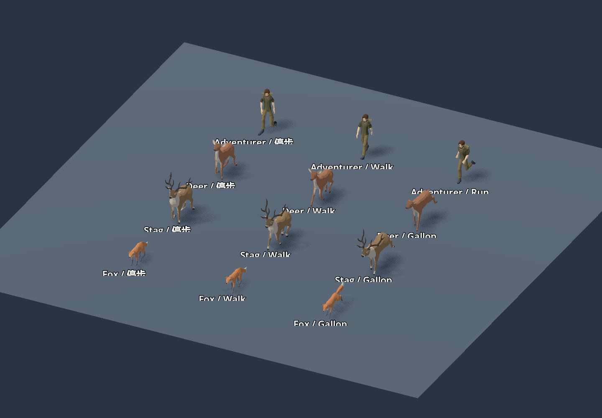
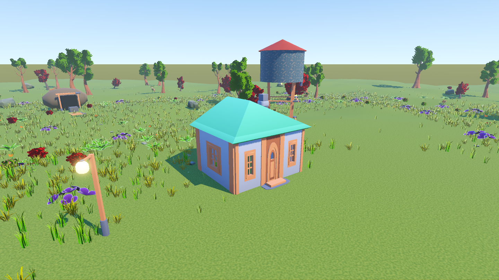
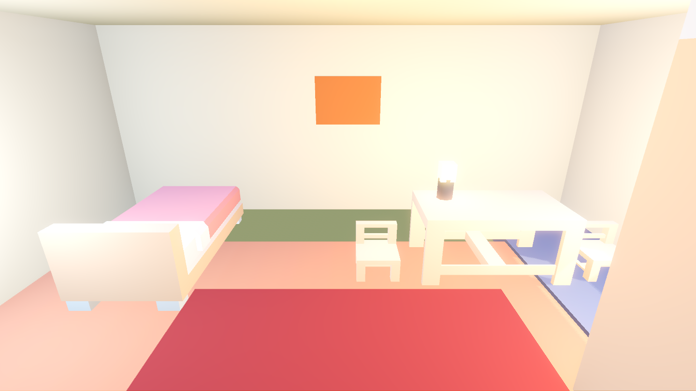

2026-10-05 · Godot 4.7.2 · 固定地图种子 20260921
停步姿态恢复正常，步频与真实位移同步
之前从行走切回待机时，动画缺少恒定的脚部位移轨道，脚会停留在上一个迈步位置。现在每段动画补齐全部骨骼的局部位置、旋转和缩放，人物采用 Idle_Neutral，三种动物也能恢复完整待机。跑步首尾补成连续循环，避免每圈跳脚。

完整周期逐帧查看
人物在实体碰撞之后量水平位移，顶墙时即使持续按方向键也会待机。动物转弯先改变朝向，并沿身体前方移动；不再沿新目标方向横向平移。走路与跑步切换保留周期相位，游泳、攻击结束后也不会遗留骨骼姿态。
| 角色 | 模型自然步速 | 模型自然跑速 | 游戏走 / 跑速度 |
|---|---|---|---|
| 冒险者 | 1.390 m/s | 3.124 m/s | 1.8 / 5.2 m/s |
| 鹿 | 0.970 m/s | 4.816 m/s | 1.15 / 6.6 m/s |
| 雄鹿 | 0.934 m/s | 4.639 m/s | 1.15 / 6.6 m/s |
| 狐狸 | 0.839 m/s | 2.567 m/s | 1.4 / 5.4 m/s |
自然速度来自完整周期 120 段采样，统计近地支撑脚向后移动的速度中位数；不是用摆腿跨度估算。播放倍率 = 实际速度 / 自然速度。人物旧走 / 跑速度为 5.2 / 8.6，本轮按自然动作优先调低；慢走推动木箱仍然有效。
素材随 Git 仓库完整交付
旧 EmacE 许可证允许随游戏发布，但禁止独立资产文件再分发，所以没有直接公开旧模型。现用 Kenney 的 Fantasy Town Kit、Furniture Kit、Survival Kit 替换房屋、家具和道具，作者页面与包内许可均标明 CC0。地表贴图由项目脚本生成。


当前 assets/ 内有 119 个场景、67 个资源文件及原始许可/来源说明，总计约 30.8 MiB。依赖审计覆盖 187 个资源，均在 assets/ 或 shaders/；119 个场景可加载，19 张独立纹理和 147 个贴图表面逐一检查。人物、动物与自然包沿用已提交的 Quaternius CC0 素材。
游戏不再读取 local_assets/，克隆仓库后无需额外安装素材或 Git LFS。旧存档中的 emace_* 只是兼容标识，会映射到新资产。.godot 缓存、个人存档和截图临时输出可以自行生成；项目源码、运行素材、许可与验收归档均提交。
验收证据
| 检查 | 结果 |
|---|---|
| 动作专项 | 58 项，fails=0；行走/跑步/攻击/死亡后脚部残留位移均为 0 |
| 战斗 / 端到端 / 水域 | 102 项 / 全流程 / 38 项，全部 fails=0 |
| 实体物理 / 房屋 / 全部外观 / 室内 | 23 项 / 34 项 / 90 项 / 全流程，全部 fails=0 |
| 自然与旧采集点 | 181 项，fails=0；37,151 个新增实例逐点 bad=0；191 个采集点身份不变 |
| 触控布局 | 1440×810、1280×720、1920×1080、2560×1440、720×1280、810×1440、1080×1920、1440×2560，全部 bad=0 |
| 完整交付 | 从 Git 索引生成干净检出；不带 local_assets 或原机器导入缓存，重建并运行通过 |
图像均为实际 Godot 窗口渲染。部分逻辑测试在退出时仍有 ObjectDB 未释放实例提示，验收断言通过；本轮没有宣称修复这一退出清理问题。逐帧图是姿态检查，未用它代替真实移动、顶墙和转弯行为测试。
运行说明 · 当前房屋与道具来源 · 自然、人物与动物来源